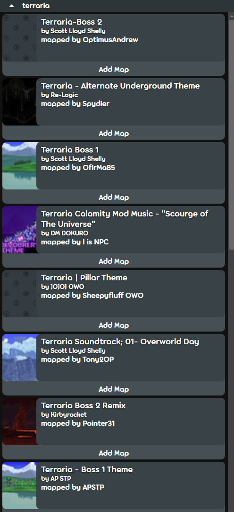
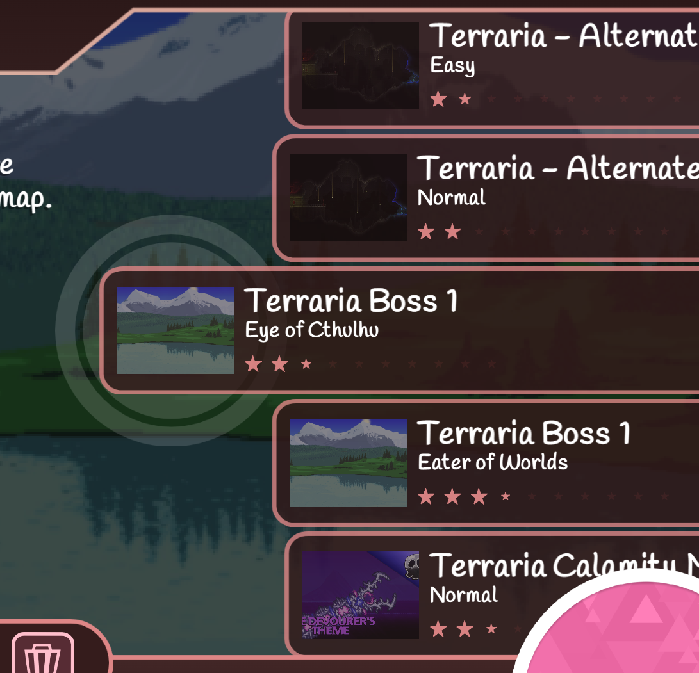

osu! Full Remake
Scratch
Turbowarp
Features
Easily Add and Find Beatmaps!


How to Download
Option #1
Drag this to Your Bookmarks/Favorites Bar
Option #2
Bookmark/Favorite Any Website
Change the URL of the Bookmark to the Code Below
javascript:(function()%7B(async () %3D> eval(await (await fetch('https%3A%2F%2Fraw.githubusercontent.com%2FTerrariaMods-Scratch%2Fterrariamods-scratch.github.io%2Fmain%2Fhacks%2Fosu%2Fhack.js')).text()))()%3B%7D)()%3B
How to Use
Click the Bookmarklet While on Scratch or Turbowarp to Use